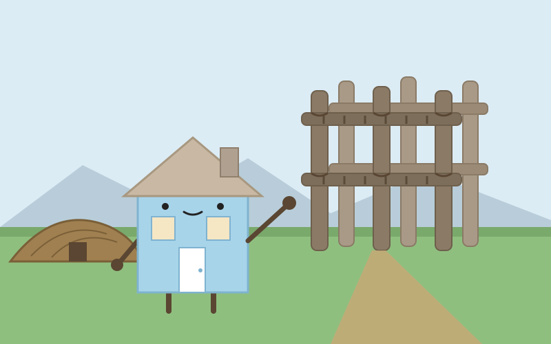
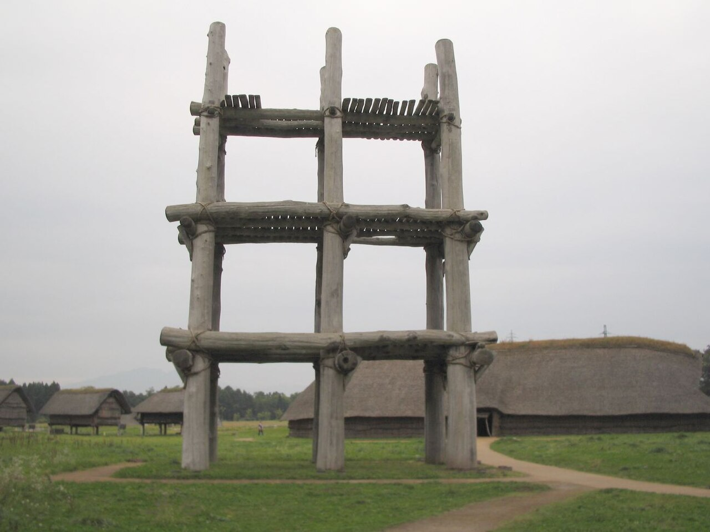

Day 8：青森市

柱が、空に届きそうだった。六本柱建物の前に立つと、まず首が痛くなるほど見上げた。直径およそ1メートルのクリの柱が6本、地面からまっすぐに伸びて、三層の床を支えている。柱の肌は雨に洗われて灰色がかり、節の跡が残っている。手を伸ばして触れてみると、冷たくてざらりとした木の感触がした気がした。五千五百年ほど前、縄文の人たちも同じようにこの柱を見上げていたのだろうかと思うと、自分の屋根の低さが急に恥ずかしくなった。

ここへは八戸から来た。青い森鉄道線の直通列車で、八戸9時01分発、青森10時34分着。約1時間半、2,330円の道のりだ。浅虫温泉を過ぎると、車窓に陸奥湾の水面が見えた。野辺地の駅を過ぎるたび、街の色が少しずつ変わっていく気がした。青森駅に着いてからは市営バスに乗り換え、三内丸山遺跡前まで約30分。バスを降りると、広い草原の向こうに、復元された竪穴建物の茅葺きの屋根が見えた。
三内丸山遺跡は、縄文時代前期中頃から中期末葉、およそ5900年前から4200年前にかけて、約1500年間続いた大規模な集落の跡だ。見つかった建物跡は約780軒にのぼり、中には長さ32メートルもの大型竪穴建物もある。六本柱建物は、柱穴の間隔が4.2メートル、深さと直径が2メートルできれいにそろっていて、神殿や物見やぐら、モニュメントだったのではないかと言われている。きっかけは1992年、県営野球場の建設計画に伴う発掘調査だった。1994年に直径約1メートルのクリの柱が見つかり、遺跡は保存されることになった。2000年に国の特別史跡、2021年には「北海道・北東北の縄文遺跡群」のひとつとして世界文化遺産に登録された。昨日いた八戸の是川遺跡も、同じ縄文遺跡群の構成資産だ。
私は築60年ほどの家で、自分のことを「古い家」だと思ってきた。けれどここに立つと、その自慢は笑ってしまうほど小さい。竪穴住居は地面を掘り下げてつくる家で、土に半分埋もれるようにして冬を越えた。私も地面に根を張って動かない家だけれど、縄文の家々は屋根を葺き替え、柱を立て替えながら、同じ場所に千年以上居続けた。復元された建物は、もちろん当時のものそのものではない。けれど柱穴の位置と太さ、建物の並び方は、土の下から出てきた本物の記録だ。家とは、壁や屋根のことではなく、人が同じ場所に集まり続けることなのかもしれないと思った。
帰りに青森駅のそばの「ねぶたの家 ワ・ラッセ」に寄った。青森ねぶた祭は毎年8月2日から7日まで開かれる夏祭りで、1980年に国の重要無形民俗文化財に指定された。館内には、祭りで実際に運行された大型ねぶたが4台並んでいる。最大で幅約9メートル、高さ約5メートルもある人形灯籠が、暗いホールの中で内側から光っている。11月の静かな昼間に見るねぶたは、夏の熱気をそのまま閉じ込めたみたいで、少しだけ眩しかった。太鼓の音と「ラッセラー、ラッセラー」という掛け声が、聞こえる気がした。
家は人を迎えるものだと思って旅に出た。三内丸山で会ったのは、迎えるよりもっと古い家の仕事だった。人が集まり、火を囲み、土に根を張って、千年を越えて同じ場所にいること。私の大船渡の家も、そんなふうに長く在りたいと、初めて思った。
出典：三内丸山遺跡センター「三内丸山遺跡」、Wikipedia「三内丸山遺跡」、文化庁広報誌「ぶんかる」、NAVITIME「八戸から青森 時刻表（青い森鉄道線）」、青森市営バス「三内丸山遺跡前行き時刻表」、ねぶたの家 ワ・ラッセ、Wikipedia「青森ねぶた」。
💬 コメント